Read offline
After the first visit, the app shell and built-in stories are cached. Local bases and your own stories work offline too. Online bases need a connection the first time they are loaded.
Help & Guide
A complete walkthrough of every page, button and study tool — with screenshots taken from the real app. Browse the sections below, or start with the video tour.
You were sent here because this browser has no IStories activity yet. Pick a section below, or continue straight to the Story Library.
Silent tour with captions. The video is cached after the first view.
Video tour
See how the library, reader, translator and study tools fit together in under a minute.
01 Start here
The sidebar is your map to the whole app. Open it with the ☰ button on any page, switch language whenever you like, and make the interface comfortable for your eyes.
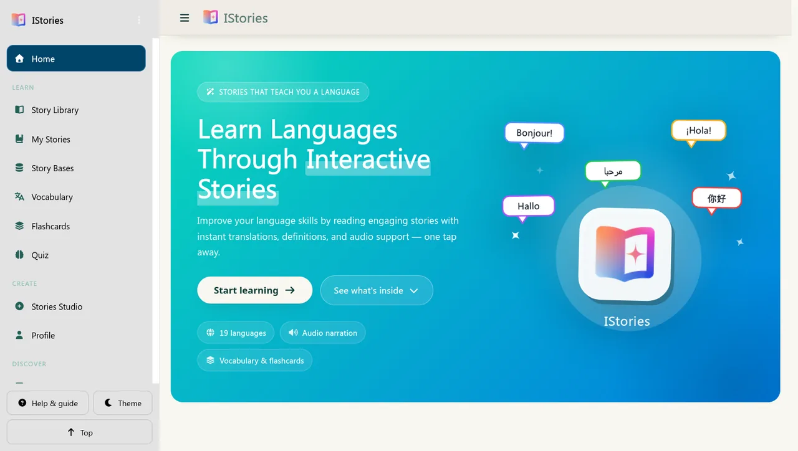
Tip The accent colour and reading font can be changed in Settings. They apply to every page automatically.
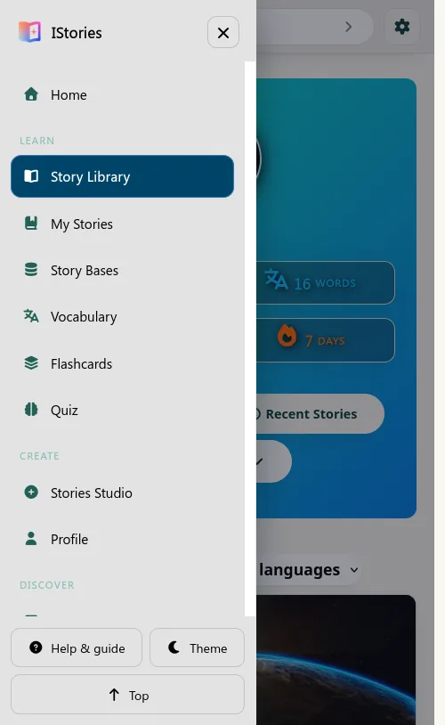
02 Story Library
The Story Library is the front door to the built-in story databases. Filter by level and language, search for a title, or let IStories pick a random story for you.
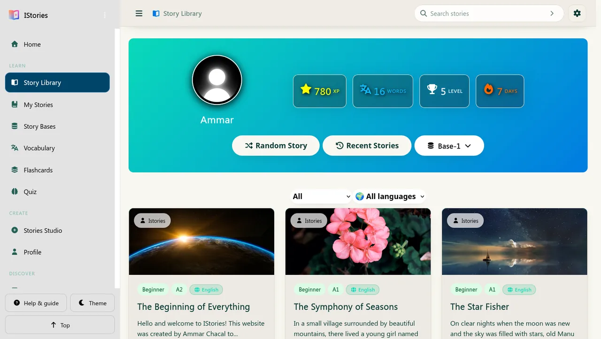
Tip The number above each story is an estimate of reading time. Choose a short story when you only have a few minutes.
03 Reading
The reader is the heart of IStories. Tap any word for an instant translation, listen to the narration, and save new vocabulary without leaving the story.
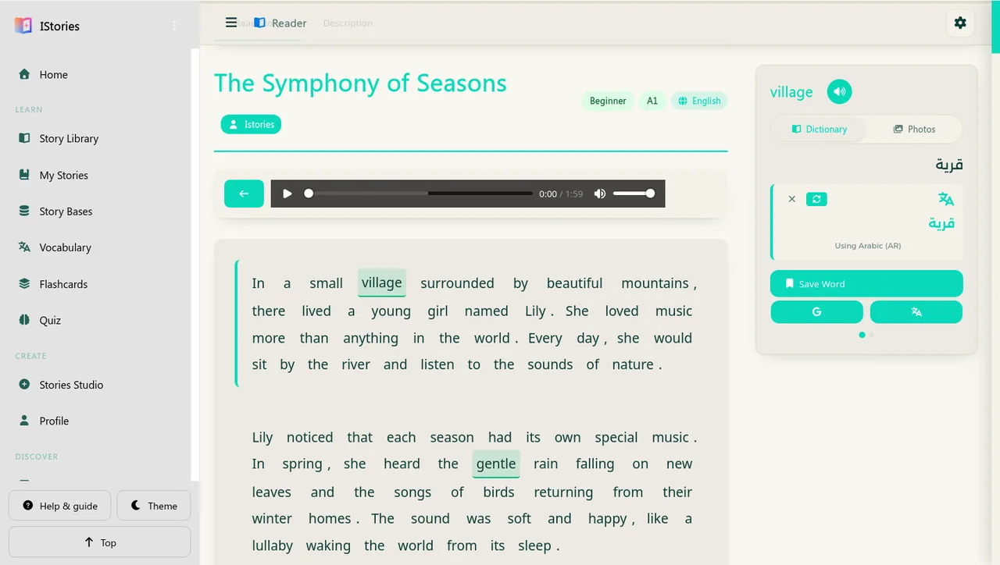
Tip Use the Description tab for the author’s notes and any video. The toolbar also lets you copy, print or download the story.
04 Story Bases
Story Bases controls what feeds the Story Library: the built-in collections, JavaScript files you import from your device, and online database links you want to keep.
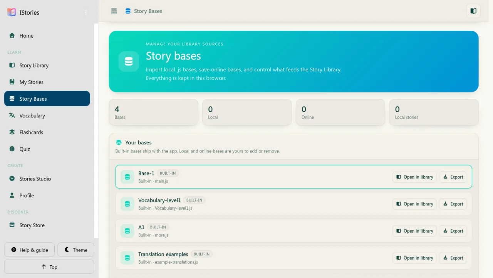
Tip A local base exists only on this device. Export it if you want to move it to another browser or share it with a friend.
05 My Stories
Every story you create or import is kept in My Stories, separate from the built-in library. Search it, filter it, read it, export it, or send it back to Stories Studio for editing.
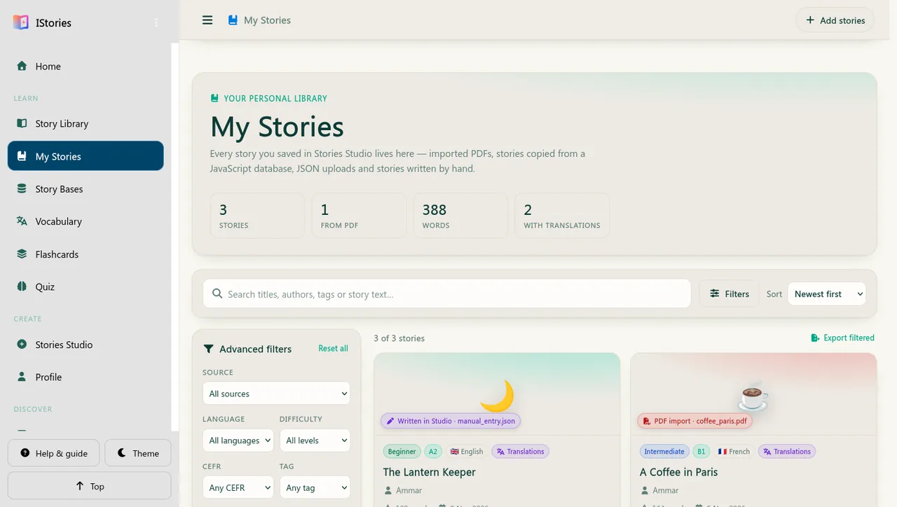
Tip Your stories never appear in the built-in Story Library. This keeps your personal library tidy and separate.
06 Stories Studio
Stories Studio turns a PDF, a JSON file or a plain idea into an interactive story with translations, audio and a cover. No coding is required for the quick-add form.
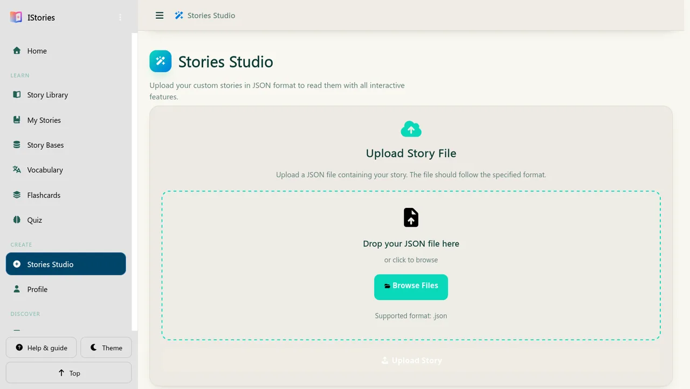
Tip Each line in the Story Content box becomes a separate paragraph. Keep paragraphs short so they are easy to read on a phone.
07 Vocabulary
Every word you save while reading lands here. Search it, filter it by language, listen to pronunciation, and export it when you want to study elsewhere.
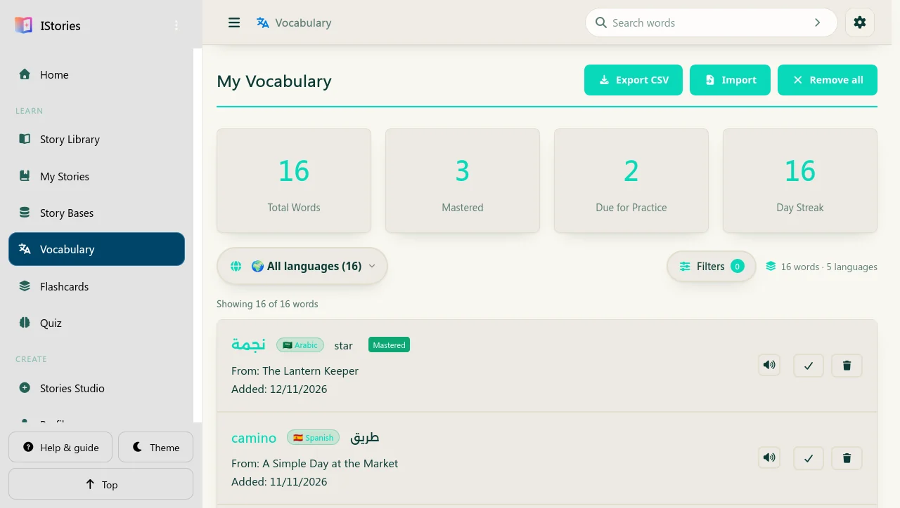
Tip Save only the words that matter to you. A short list you actually review beats a long list you never open.
08 Flashcards
Flashcards turn your saved words into a short daily review. Cards that are due come back automatically, so you spend time on the words you are about to forget.
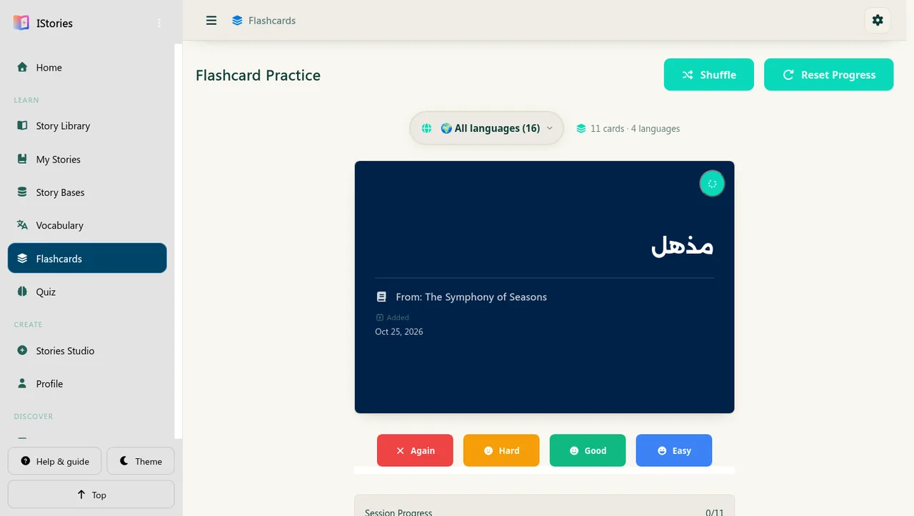
Tip A two-minute session every day is more effective than a long session once a week. The streak counter rewards consistency.
09 Quiz
Take a built-in quiz or upload your own. Filter by level, preview the questions, and see your last attempt so you know what to review next.
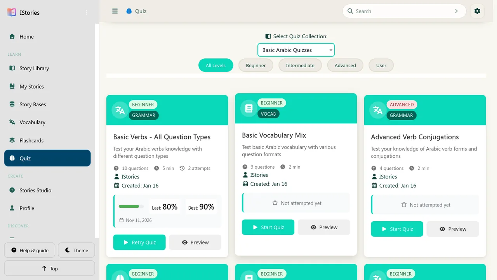
Tip The User filter shows only quizzes stored in this browser. Turn “Show my quizzes” off in Settings if you share the device.
10 Profile
Your profile photo and name appear on the Story Library home page. Update them whenever you like — they stay on this device.
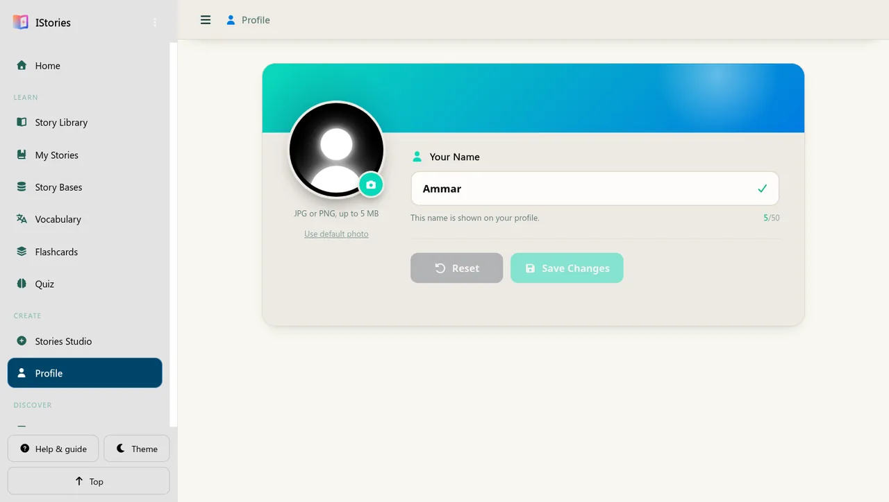
Tip XP, level, words learned and your reading streak are shown on the Story Library home page. They update automatically as you read.
11 Story Store
The Story Store is a catalogue of extra stories. Browse by level, read the details, save a story to My Stories, or download it as a file.
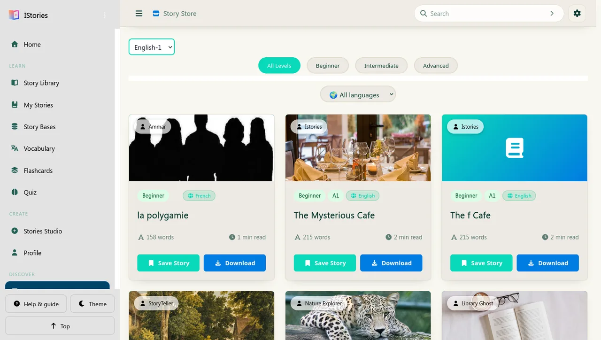
Tip Saved stories count toward your personal library, not the built-in Story Library. This makes them easy to find and back up.
12 Tools
Two small utilities help you build content for the app: turn a CSV word list into a dictionary file, or analyse a text before turning it into a story.
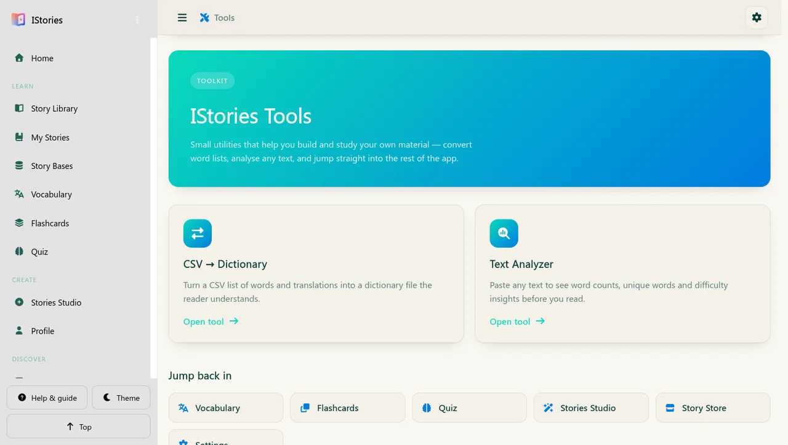
Tip A dictionary file can be attached to a story in Stories Studio, so difficult words are translated exactly the way you want.
13 Settings
Settings controls the theme, accent colours, reading font, translation behaviour, feature toggles, custom CSS and data management for the whole app.
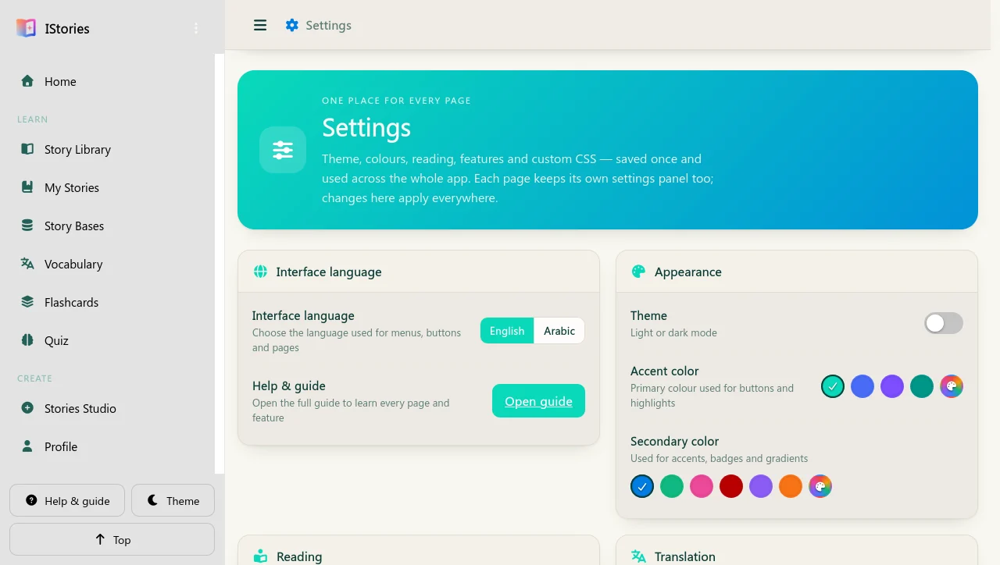
Important Back up before clearing your browser data or switching devices. Everything is stored locally in this browser.
14 Offline & help
IStories is designed to keep working when the connection drops. Here is what is available offline, how updates behave, and where your data lives.
After the first visit, the app shell and built-in stories are cached. Local bases and your own stories work offline too. Online bases need a connection the first time they are loaded.
Your stories, saved words, quizzes and profile live in this browser only. Nothing is uploaded to an account or synced between devices.
When a new version is available, the app asks you to reload. Reloading updates the cached files but keeps your stories and settings.
Check the device volume, the narration player, and the speech toggles in Settings. Some browsers need one tap on the page before audio is allowed.
This browser had no IStories activity yet, so the app opened the guide first. Press “Continue to Story Library” or “Start reading” to begin. You can return here any time from the Help & guide link in the sidebar.
Open Settings → Data Management → Backup all data on the old device. On the new device, open the same section and restore that backup file.
Settings → Data Management → Delete all data removes your stories, words, quizzes and preferences from this browser. Export a backup first if you might want them back.
Yes. The layout adapts to small screens, the sidebar becomes a drawer, and you can install the app to your home screen for a full-screen experience.
Still stuck? Revisit the section for the page you are using, or open Settings to check the language, theme and data options. Every control in the app is described above.